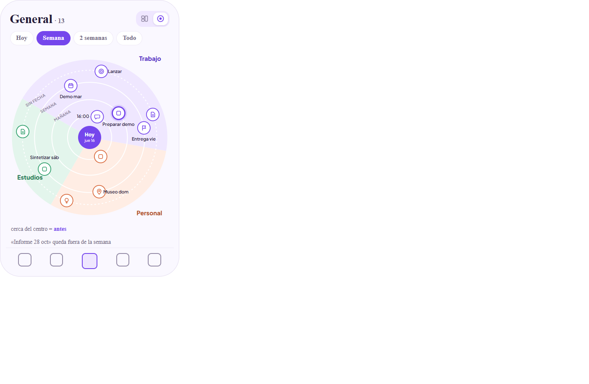
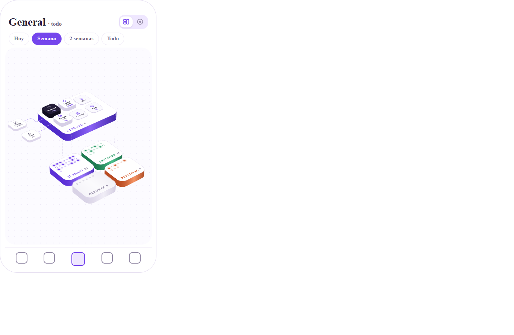
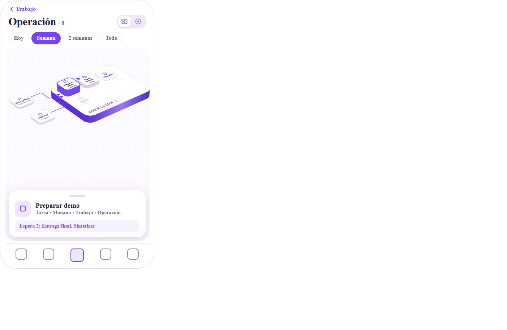
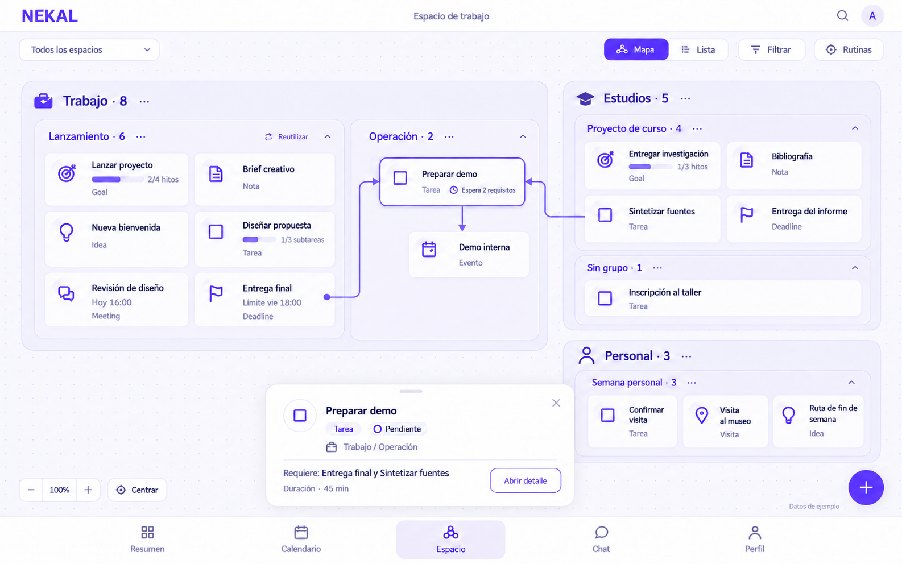
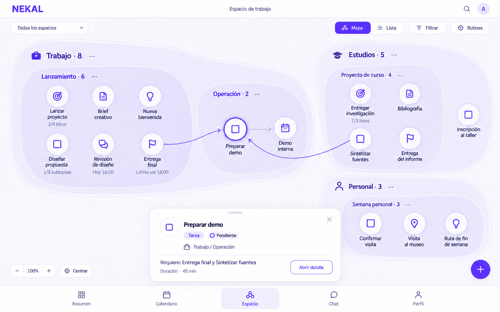
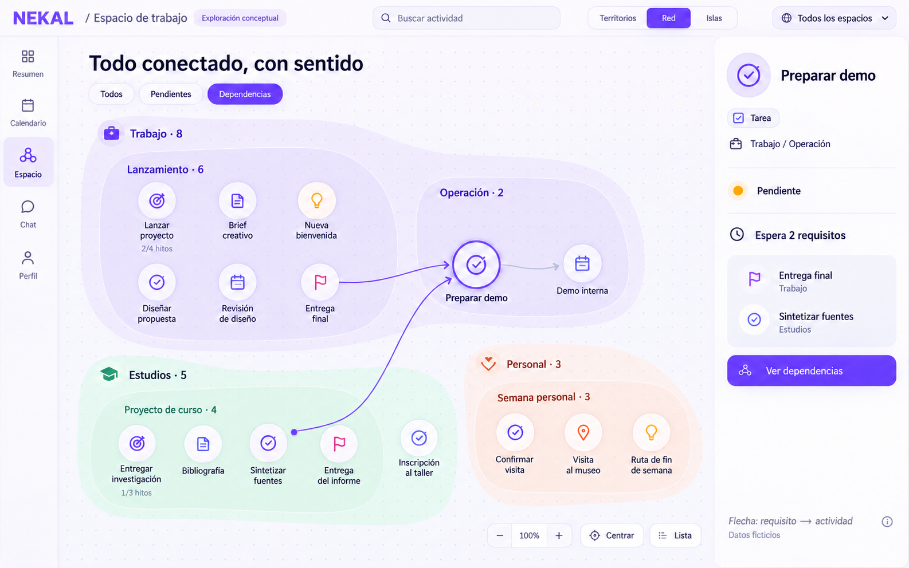

Sí, son esas 3
Tiempo (órbitas 2D), Mesas (3D) y Plano (fichas 2D).
Son tres formas de ver los mismos datos. Las tres comparten el botón de arriba, el selector de tiempo y la hoja que se abre al tocar algo.

Hoy al centro y lo que viene alrededor. Cada mesa es una porción del círculo. En 2D, plano y suave.
Base: maqueta 01, la B

La mesa grande arriba y sus mesas abajo. Tocas una para bajar. Es la vista del wow y de la profundidad.
Base: maqueta 03, pantallas 1 y 2

Lo mismo que la pantalla 3, con fichas que se leen y conexiones hacia afuera, y el estilo de la "Cerca" de la maqueta 02, pero sí o sí en 2D, como estas:


